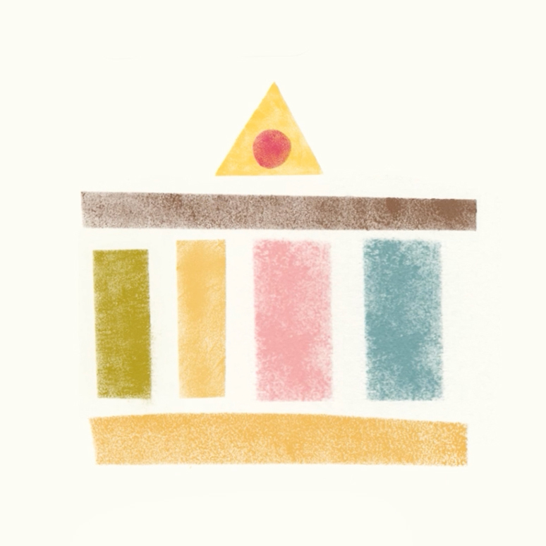
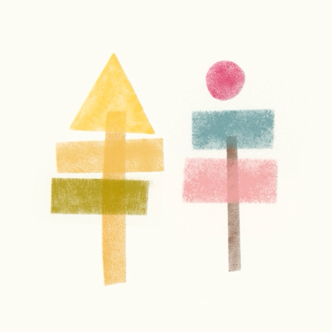

Drift
A brand and motion concept for Drift, an app for digital nomads. I developed the identity from the ground up, building its visual and motion language around the rhythm of packing, moving and starting again.
Unpack. Rebuild. Move. Repeat.
Digital nomads repeatedly arrive somewhere new, unpack, settle in, then pack up and move on. I translated that cycle into a modular visual system: a limited set of shapes that disassemble, move and rearrange to form something new each time.
One Set of Shapes, Many Possibilities
A limited set of geometric forms became the building blocks of the identity — rearranged again and again to create different places and experiences while keeping the visual language consistent.





When Motion Answers Back
Even budgets have feelings.
Same language. Different interactions.